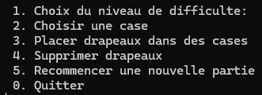
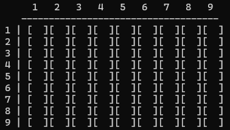

Jeune étudiant, en première année au Gaming Campus à la Défense, passionné de développement notamment le monde du jeu vidéo,
je souhaite partager et présenter au fur et à mesure mes projets personnels et professionels déjà accomplis jusqu'à aujourd'hui.
À propos
Après 3 ans en Bac Professionnel CIEL (Cybersécurité, Informatique et Réseaux, ELectronique) et 1 an de BTS SN (Système Numérique), j'ai trouvé la voix qui mélange l'une
de mes plus grande passion, les jeux vidéos, et mon parcours professionel qui me convient le plus, le développement informatique. Je suis prêt à surmonter tout les défis qui se présentent
face à moi afin de pouvoir réussir à exceller dans ce domaine et pouvoir créer mon propre jeu vidéo plus tard.
C++
SMFL
html
css
Projets
Démineur
C++
Entant que développeur:
Ce premier projet est entièrement conçu sans moteur graphique sans moteur graphique. Le rendu final sera donc affiché sur la commande Windows.
Je suis très content du résultat obtenu pour mon tout premier jeu développé en C++.
La partie compliquer était de devoir créer le concept d'aléeatoire pour l'emplacement des bombes à chaque parties.
Mon objectif est de partager mon évolution en présentant les différents types de projets conçus au cours de mon parcours scolaire. J'espère exceller afin de pouvoir présenter
davantages de projets à l'avenir.
En Jeu
Le but du jeu est simple: il faut dévoiler toutes les cases sans toucher les bombes.
Le joueur utilise uniquement le pavé numérique du clavier. Pas besoin de souris.

Le joueur devra décider de sa prochaine action via le menu à chaque fois qu'il voudra jouer. Des indices ("1" à "8") indiquent le nombre de bombes qui entourent les cases que le joueur
aura décider de révéler.
Les bombes sont marquées par "*". Les drapeaux ("F") permettent de signaler les cases suspectes.
Le joueur utilise uniquement le pavé numérique du clavier. Pas besoin de souris.

La partie se termine si le joueur reussi a dévoiler toutes les cases sans tomber sur une bombe ou si, au contraire, il en dévoile une avec.